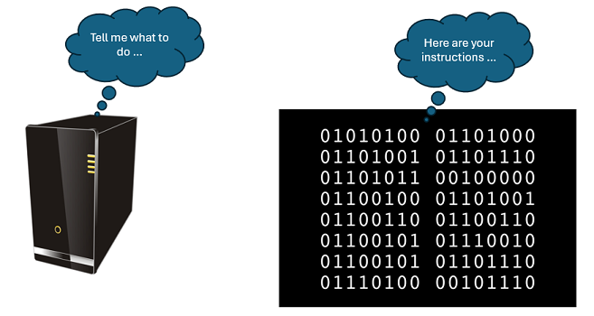
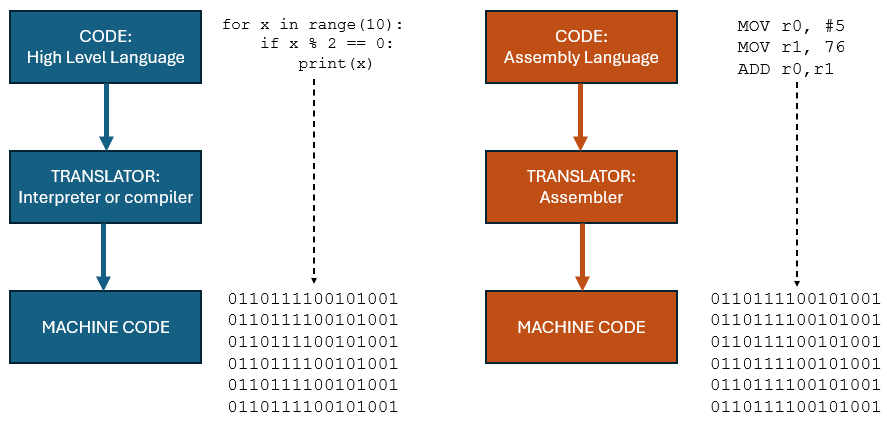

Programming Languages
Objectives
- Define a programming language and explain their role software development.
- Differentiate between low-level and high-level programming languages.
- Compare and contrast high level and low level programming languages
- Define machine code and assembly language as low-level languages.
- Describe the role of programming translators (assembler, compiler and interpreter)
What is a computer program?
A computer program is a set of instructions compiled together in a file to perform some specific task by the CPU (Central Processing Unit). For the machine is is a series of binary numbers (0s and 1s) arranged in a sequence, for the programmer it is a series of instructions written in their chosen programming language.

To write a computer program we need to use a programming language. It's an artificial, formal, language that uses a set of statements and rules that provide the instructions for the computer to follow. There are many different programming languages. Some designed to solve the needs of particular applications e.g. web development, games, artificial intelligence etc; some to keep pace with the changing needs of technology e.g. mobile applications; or data science applications whilst others may be purely experimental. Each of these can be broadly categorised as being either:
- low level language
- high level language
Ultimately the computer can only interpret and execute instructions in its on native language, that is binary or machine code. So, the instructions we write in our chosen programming language have to be converted into the machine code for our target processor.
This section explores the difference between high level and low level languages and the tools we need to convert those languages nto machine code.
Low level languages
Machine code
The computer's native language is binary code, or machine code, that is the series of 0s and 1s. The earliest computers had to programmed using binary.
A typical instruction might be e.g. '1011111100110101' which to us looks completely meaningless! Imagine trying to write a program using just binary. it wold be very time-consuming and so easy to make mistakes. It's not easy to tell the different between '1011111100110101' and '1011101100110101' but they be instructing the computer to do quite different things.
Also the computer we're writing a program for will have its own interpretation of what that instruction might be. the CPU has its own instruction set so for one CPU the instruction '1011111100110101' might be to add two values together but for another it might be to store a value in memory. Programs we write for one processor will not run on a different processor with a different instruction set.
Clearly, writing programs in raw binary machine code is to be avoided.
Assembly language
A step 'up' from machine code is assembly language. Here we take a machine code instruction, such as '1011111100110101', and create a shorthand for that instruction e.g. LDA #5. We would read this as "Load the accumulator with the value 5". The mnemonic LDA means "load the accumulator" and #5 means the actual integer value 5.
It's certainly easier that having to struggle with the binary code but assembly language is still processor specific so still tied to the underlying architecture of the computer. It remains a time-consuming exercise to write even the simplest of programs using assembly language.
Having written our assembly language program we then need to convert it into the underlying machine code and for that we use a tool called an assembler. Each line of an assembly language program is converted into a single machine code instruction.
For example, here is an assembly language program (for an Arm processor) that checks if a value is even or odd:
The assembly language mnemonics are easier to work with than the machine code but it is still a time consuming process.
The resulting machine code for this file is seen below. The second column is the binary instruction, written as hexadecimal, showing how one assembly language instruction maps to one machine code instruction (in the third column):
The high level language syntax allows us to provide sensible names for functions and variables making it easy for the reader to understand what is happening. It also provides us with constructs such as the if statement on line 2.
This code then needs to be translated into machine code to be run on a target computer. Depending on the language we are using we will need with an interpreter or a compiler. Both will take the high-level instructions and convert them into machine code.
High Level vs Low Level
Low-level languages, like machine code and assembly language, are closely tied to hardware and are less human-readable, while high-level languages offer more abstraction and portability, making them preferred for most programming tasks. The following table provides a useful summary.
| High Level Language | Low Level Language |
|---|---|
| Programmer friendly | Machine friendly |
| Easy to read and understand | Hard to read and understand |
| Easy to modify and change | Hard to make changes |
| Requires less code for the same task | Needs a lot of code for even simple tasks |
| Portable (code can be run on different systems) | Non-portable |
| Needs a compiler or interpreter for translation | Needs an assembler for translation |
| Less memory efficient | Makes better use of limited resources |
| Likely to be slower than low level equivalent | Likely to be faster than high level equivalent |
Program translators
Unless the code you are writing is the machine code you will need to use a tool to convert the code into the target machine code.

Interpreter
An interpreter is a program that reads and executes code written in a high-level programming language directly, without the need for a separate compilation step. It translates and executes the source code line by line or statement by statement, interpreting the instructions in real-time. Interpreters are commonly associated with languages like Python, JavaScript, Ruby, and Lua.
Interpreters do not produce a standalone executable file as they translate in real-time. Code written in this way is usually platform independent as long as there is an interpreter available for the target platform. This simplifies the distribution of code across different operating systems.
If you write a program with Python and want your friend to run this code you would have to send them your code and they would need to have a Python interpreter installed on their computer. As they have your code they could, if they wished, make changes to your source code and return it back to you.
Compiler
A compiler takes the high level source code and translates it into machine code producing a separate, stand-alone, executable file. It has to do this even before the program can be run. To execute, run, the program we only need the executable file, the source code does not need to be shared.
Commercial software will be distributed as compiled machine code. To run the same code on Windows and MacOS or some other target platform will require a different executable file.
Assembler
an assembler is used to translate assembly code into machine code instructions. There is a one-to-one mapping from the assembly language instruction to the associated machine code instruction. Thus the structure of both are the same.
Bytecode
Most contemporary programming languages will use a combination of compilation and interpretation. To address issues of platform independence the source code is converted into bytecode. Languages including Python, Java and C# (.NET) follow this principle.
For example Java programs are compiled into an intermediate bytecode, which is platform-independent. The same bytecode can be executed on any system that has a compatible Java Virtual Machine (JVM) installed. This helps in creating "write once, run anywhere" (WORA) applications.
.NET, developed by Microsoft, also follows a similar approach to address platform independence and portability. The key components in the .NET framework that contribute to this are the Common Intermediate Language (CIL) and the Common Language Runtime (CLR).
Also Python. When you run a Python script, the source code is first compiled into this intermediate form called "bytecode." This bytecode is a low-level representation of the source code and is not directly executed by the computer's hardware.
The compilation step is performed by the Python interpreter, and the resulting bytecode is stored in files with a .pyc extension (for compiled Python files). The bytecode is platform-independent, allowing Python programs to be executed on different operating systems without modification.
During runtime, the Python interpreter reads and executes the bytecode using a virtual machine known as the Python Virtual Machine (PVM). The PVM interprets the bytecode and translates it into machine code that is specific to the underlying hardware, facilitating the execution of Python programs.
This combination of compilation to bytecode and subsequent interpretation by the virtual machine provides a compromise between the speed of compiled languages and the flexibility of interpreted languages. It allows for portability and ease of development, as well as providing a level of abstraction from the machine-specific details.